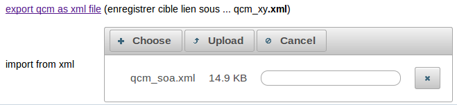

SaasTraining / QCM / Guide Utilisateur |
presentation
SaasTraining est une application web correspondant à un moteur de QCM.
Développée par Didier Defrance en Java/JEE (Spring+JPA+JSF) , cette (modeste) application
est utilisable gratuitement dans son état de fonctionnement (pouvant être sensible à la charge)
Principales fonctionnalités:
- choisir et effectuer un qcm en ligne , résultats à la fin
- éditer en ligne de nouveaux (saisir questions et réponses)
- import/export de qcm au format xml (pour les auteurs)
- ...
Cette application est accessible au bout de l'URL suivante:
http://www.mycontrib.org/saas-training-web
Conçue en mode Saas (Software as a service) , cette application peut être utilisée par plusieurs entreprises/organisations
et certains QCM pourront éventuellement être partagés
utilisation (limitée) anonyme
l'accès anonyme permet uniquement d'accéder aux QCM publics (partagés)
Roles et droits d'accès
| Rôles | fonctionnalités accessibles |
| USER_OF_ORG (*) | choisir et effectuer un qcm , visualiser immédiatement les résultats |
| AUTHOR_OF_ORG | gérer un qcm (créer,modifier,supprimer) , saisir questions et réponses |
| ADMIN_OF_ORG | administration des groupes et utilisateurs
pour une certaine organisation |
| ADMIN_OF_SAAS | administrer les organisations autorisées à enregistrer leurs QCMs |
(*)
- en mode "utilisateur generique d'une organisation" , aucun résultat ni score ne sera enregistré .
- en mode "utilisateur spécifique (avec username)" , seulement le score sera enregistré
(pour un suivi de la progression au niveau des connaissances acquises)
organisations autorisées et comptes génériques
Toute organisation autorisée à utiliser (en mode non anonyme) cette application
recevera par mail toutes les informations pour se connecter :
* nom d'organisation
* mot de passe pour "utilisateur_générique" (pour effectuer des QCM en entraînement libre)
* mot de passe pour "auteur_générique" (pour créer/enregistrer de nouveaux QCM)
* mot de passe pour "administrateur_générique" (pour créer des groupes/utilisateurs de façon à effectuer un suivi des scores)
toute nouvelle organisation souhaitant utiliser cette application devra en faire la demande par mail
à l'administrateur de ce site : didier@d-defrance.fr
Authentification (Login)
- saisir le nom de l'organisation (ex: org1)
- cliquer sur le bouton "rechercher/vérifier"
- choisir le rôle dans la liste
- laisser coché "generic account" ou bien saisir un nom d'utilisateur spécifique
- saisir le mot de passe
- cliquer sur "login"
Choix d'un sujet et d'un QCM (à effectuer)
- ajuster si besoin le filtrage (organisation seule ou public en plus)
- sélectionner un sujet
- sélectionner un QCM
- cliquer sur "effectuer le qcm choisi"
Répondre aux questions et visualiser les résultats
- sélectionner la (ou les) réponse(s) qui vous semble(nt) être bonne(s)
- passer à la question suivante
- revenir éventuellement aux questions précédentes
- soumettre l'ensemble des réponses aux questions
- visualiser et analyser le score et les bonnes réponses)
Specification d'un QCM à créer ou modifier (pour auteurs)
- sélectionner et ajuster si besoin un sujet (choix,ajout,edition,suppression)
- un sujet partagé (public) devrait idéalement être de la formation "orgXy/categorie/sous_categorie"
- sélectionner ou créer un QCM
- éditer les détails du qcm (en cliquant sur l'icône "crayon" du milieu)
- enregistrer éventuellement l'url direct du qcm pour la recopier ou diffuser
Fixer les options d'un QCM (pour auteurs)
- Editer si besoin les options du qcm (titre , mots clefs , ...)
- shared (public) est une option importante : un qcm partagé sera vu (en lecture seule) par les autres organisations
- enregitrer si besoin les options (après une modification)
- revenir à la liste des autres QCMs ou bien saisir les questions/réponses du QCM actuel
Saisir et enregistrer les questions et les réponses (pour auteurs)
- Saisir le texte de la question
- Choisir entre "bonne réponse unique" (mode exclusif) ou "bonnes réponses potentiellement multiples"
- Saisir le texte de chacune des bonne(s) ou mauvaises réponses
- Sélectionner si besoin la ou les bonne(s) réponses
- Enregistrer via "update" ou "update and ..." puis naviguer éventuellement vers une autre question
NB:
* Seule la dernière question d'un qcm peut être supprimée.
* en supprimant plusieurs fois la dernière question , on peut supprimer plusieurs questions.
* il est conseiller de se relire et d'effectuer le qcm (en partant du menu principal)
* Si l'on a créer une question de trop: se placer sur la dernière "last" et la supprimer.
Exporter ou ré-importer un qcm au format XML (pour auteurs)

- export via "enregistrer la cible du lien sous ..." xxx.xml
- ... (le fichier xml constitue une sauvegarde en cas de problème) ...
- ...
- ... éventuel ré-import via upload du fichier sauvegardé ...
Administrer des groupes et des utilisateurs (pour admin_of_org)
- créer ou sélectionner un groupe
- créer ou sélectionner un utilisateur
- enregistrer la mise à jour via "update ..."
NB:
* les speudo sujet "???" et "? new user" sont fictifs : ils ne servent qu'à inviter
à effectuer une sélection ou un ajout .
* le lien hypertexte "display sessions" permet de visualiser les résultats
d'un utilisateur existant qui a déjà effectué quelques qcm .
Configurer une organisation (pour admin_of_org)
- ne pas oublier les mots de passe !!!
Afficher les resultats des sessions de qcm effectuées un utilisateur sélectionné (pour admin_of_org)
Fonctionnalités prévues dans les futures versions (fin 2014, 2015 , ...)
- éventuelle illustration d'une question de qcm par une petite image (avec upload)
- ...quelques services web pour récupérer certains résultats ou bien enregistrer des utilisateurs ...
- éventuel mode certification (avec date fixe et temps limité)
- ...